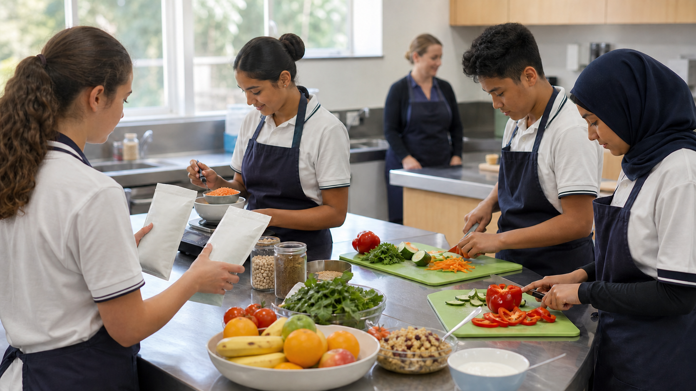

1. Learn
Read one named section at a time and use its learning visual.
Year 9 Food Technology · 2025 syllabus planning pathway
Use evidence to understand how food supports the body, why choices differ and how to design safer, healthier and more responsible food solutions.
0 of 44 connected learning actions complete on this device
Resume at Module 1, Section 1
How the course works
Read one named section at a time and use its learning visual.
Answer ten questions and use the feedback to repair misconceptions.
Use the concept in a realistic food-choice, health or design decision.
Complete the long response and keep important evidence in My folio.
Six-module pathway
Module 1
Personal hygiene and readiness · Contamination, temperature and food safety · Safe decisions and incident response
0 of 3 section packages complete
Open Module 1Module 2
Six nutrients and their roles · Energy, growth and repair · Digestion and nutrient absorption
0 of 3 section packages complete
Open Module 2Module 3
Ingredients, servings and nutrition panels · Comparing foods fairly · Marketing claims, ethics and health
0 of 3 section packages complete
Open Module 3Module 4
Active non-nutrients and food variety · Nutrition across the lifecycle · Personal, social, cultural and digital influences
0 of 3 section packages complete
Open Module 4Module 5
Australian food-consumption patterns · Convenience, delivery and food technology · Designing responsible food solutions
0 of 3 section packages complete
Open Module 5Module 6
Under- and overnutrition · Nutrition-related conditions and prevention · Australian guidance and the HelloEats challenge
0 of 3 section packages complete
Open Module 6